Unit 6 Sub-section 1:
import os
# import libraries %%
import pandas as pd
import seaborn as sns
import matplotlib.pyplot as plt
# %%
fileDir = os.path.dirname(__file__)
filePath = os.path.join(fileDir, 'cleandata.csv')
df=pd.read_csv(filePath)
# %%
print(df.columns)
#Created a correlation heatmap to understand relationships %%
plt.figure(figsize=(10, 6))
sns.heatmap(df[['price', 'minimum_nights', 'number_of_reviews', 'reviews_per_month', 'availability_365', 'calculated_host_listings_count']].corr(), annot=True, cmap='coolwarm')
plt.title('Correlation Heatmap')
plt.tight_layout()
plt.show()
#Distribution of Room Types by Neighbourhood Group %%
plt.figure(figsize=(10, 6))
sns.countplot(data=df, x='neighbourhood_group', hue='room_type')
plt.title('Distribution of Room Types by Neighbourhood Group')
plt.xlabel('Neighbourhood Group')
plt.ylabel('Count')
plt.xticks(rotation=45)
plt.legend(title='Room Type')
#Price distribution graph %%
plt.figure(figsize=(10, 6))
sns.histplot(df['price'], bins=50, kde=True)
plt.title('Price Distribution')
plt.xlabel('Price')
plt.ylabel('Frequency')
plt.xlim(0, 500) # Limit x-axis to the maximum price # Limit y-axis to a reasonable value for
plt.show()
#initialized relevant variables %%
features = [['price', 'minimum_nights', 'number_of_reviews', 'reviews_per_month', 'availability_365', 'calculated_host_listings_count']]
# Numerical features normalization%%
from sklearn.preprocessing import StandardScaler
scaler = StandardScaler()
X_scaled = scaler.fit_transform(df[features[0]])
# Elbow method %%
from sklearn.cluster import KMeans
inertia = []
K= range(1, 11)
for k in K:
kmeans = KMeans(n_clusters=k, random_state=42)
kmeans.fit(X_scaled)
inertia.append(kmeans.inertia_)
plt.figure(figsize=(10, 6))
plt.plot(K, inertia, marker='o')
plt.title('Elbow Method for Optimal K')
plt.xlabel('Number of Clusters (K)')
plt.ylabel('Inertia')
plt.xticks(K)
plt.grid(True)
plt.show()
# Silhouette score %%
from sklearn.metrics import silhouette_score
for k in range(2, 11):
kmeans = KMeans(n_clusters=k, random_state=42)
preds = kmeans.fit_predict(X_scaled)
score = silhouette_score(X_scaled, preds)
print(f'Silhouette Score for k={k}: {score:.4f}')
# Choosing best k %%
best_k = 4
kmeans=KMeans(n_clusters=best_k,random_state=42)
df['cluster']=kmeans.fit_predict(X_scaled)
# Replace with the optimal k found from the elbow method or silhouette score
# Plotting cluster trhough relevant variables %%
plt.figure(figsize=(10, 6))
sns.scatterplot(x=X_scaled[:, 0], y=X_scaled[:, 1], hue=df['cluster'], palette='viridis', alpha=0.7)
plt.title('K-Means Clustering Results')
plt.xlabel('Price (scaled)')
plt.ylabel('Minimum Nights (scaled)')
# %%
plt.figure(figsize=(10, 6))
sns.scatterplot(x=X_scaled[:, 0], y=X_scaled[:, 2], hue=df['cluster'], palette='viridis', alpha=0.7)
plt.title('K-Means Clustering Results')
plt.xlabel('Price (scaled)')
plt.ylabel('Number of reviews (scaled)')
# %%
plt.figure(figsize=(10, 6))
sns.scatterplot(x=X_scaled[:, 0], y=X_scaled[:, 3], hue=df['cluster'], palette='viridis', alpha=0.7)
plt.title('K-Means Clustering Results')
plt.xlabel('Price (scaled)')
plt.ylabel('Reviews per month (scaled)')
# %%
plt.figure(figsize=(10, 6))
sns.scatterplot(x=X_scaled[:, 0], y=X_scaled[:, 4], hue=df['cluster'], palette='viridis', alpha=0.7)
plt.title('K-Means Clustering Results')
plt.xlabel('Price (scaled)')
plt.ylabel('Reviews per month (scaled)')
##Visualisations
#Box Plot of Price by Neighborhood Group
plt.figure(figsize=(12, 6))
sns.boxplot(data=df, x='neighbourhood_group', y='price')
plt.title('Box Plot of Price by Neighbourhood Group')
plt.xlabel('Neighbourhood Group')
plt.ylabel('Price')
plt.xticks(rotation=45)
plt.ylim(0, 500) # Limit y-axis to a reasonable value
plt.tight_layout()
plt.show()
#Cluster Characteristics Visualization
cluster_means = df.groupby('cluster')[['price', 'minimum_nights', 'number_of_reviews', 'reviews_per_month', 'availability_365']].mean().reset_index()
cluster_means.plot(x='cluster', kind='bar', figsize=(12, 6))
plt.title('Average Features per Cluster')
plt.xlabel('Cluster')
plt.ylabel('Average Values')
plt.xticks(rotation=0)
plt.tight_layout()
plt.show()
#Price vs. Number of Reviews Scatter Plot
plt.figure(figsize=(10, 6))
sns.scatterplot(data=df, x='number_of_reviews', y='price', hue='cluster', palette='viridis', alpha=0.7)
plt.title('Price vs. Number of Reviews')
plt.xlabel('Number of Reviews')
plt.ylabel('Price')
plt.ylim(0, 500) # Limit y-axis to a reasonable value
plt.legend(title='Cluster')
plt.show()
#Pair Plot (relationships between multiple features)
sns.pairplot(df[['price', 'minimum_nights', 'number_of_reviews', 'reviews_per_month', 'availability_365']], diag_kind='kde')
plt.suptitle('Pair Plot of Key Features', y=1.02)
plt.show()
#Feature Importance Plot (random forest model)
from sklearn.ensemble import RandomForestRegressor
from sklearn.model_selection import train_test_split
X = df[['minimum_nights', 'number_of_reviews', 'reviews_per_month', 'availability_365', 'calculated_host_listings_count']]
y = df['price']
X_train, X_test, y_train, y_test = train_test_split(X, y, test_size=0.2, random_state=42)
model = RandomForestRegressor(random_state=42)
model.fit(X_train, y_train)
feature_importances = pd.Series(model.feature_importances_, index=X.columns)
feature_importances.nlargest(5).plot(kind='barh')
plt.title('Feature Importance for Price Prediction')
plt.xlabel('Importance Score')
plt.show()
#Actual vs. Predicted Prices
y_pred = model.predict(X_test)
plt.figure(figsize=(10, 6))
plt.scatter(y_test, y_pred, alpha=0.7)
plt.plot([0, 500], [0, 500], '--r') # 45-degree line
plt.title('Actual vs. Predicted Prices')
plt.xlabel('Actual Prices')
plt.ylabel('Predicted Prices')
plt.xlim(0, 500)
plt.ylim(0, 500)
plt.grid()
plt.show()
#Cluster Profiles Visualization
cluster_profiles = df.groupby('cluster')[['price', 'minimum_nights', 'number_of_reviews', 'reviews_per_month', 'availability_365']].mean()
cluster_profiles.plot(kind='bar', figsize=(12, 6))
plt.title('Average Characteristics of Each Customer Segment')
plt.ylabel('Average Values')
plt.xticks(rotation=0)
plt.tight_layout()
plt.show()
#Heatmap of Clusters by Room Type and Neighborhood
cluster_room_neighborhood = df.pivot_table(values='price', index='room_type', columns=['neighbourhood_group', 'cluster'], aggfunc='mean')
plt.figure(figsize=(12, 8))
sns.heatmap(cluster_room_neighborhood, annot=True, cmap='YlGnBu')
plt.title('Heatmap of Average Price by Room Type, Neighbourhood Group, and Cluster')
plt.xlabel('Neighbourhood Group and Cluster')
plt.ylabel('Room Type')
plt.tight_layout()
plt.show()
Unit 6 Sub-section 2: Data Processing and Analysis Scripts
Cleaning scripts for original Airbnb dataset
# Python Requirements
import os
# External Requirements
import pandas as pd
import numpy as np
from scipy import stats
import matplotlib.pyplot as plt
import seaborn as sns
# Get file
fileDir = os.path.dirname(__file__)
filePath = os.path.join(fileDir, 'AB_NYC_2019.csv')
# Load into data-frame
df = pd.read_csv(filePath)
print()
print(df)
missing_info = df.isnull().sum().reset_index() # Boolean dataframe, sum columns, convert back to dataframe
missing_info.columns = ['Column', 'Total Missing Values'] # Name Columns
missing_info['% Missing'] = (missing_info['Total Missing Values'] / len(df)) * 100 # Create % column
print()
print(missing_info)
# Convert Datatypes
df['last_review'] = pd.to_datetime(df['last_review'])
df['neighbourhood_group'] = df['neighbourhood_group'].astype('category')
df['neighbourhood'] = df['neighbourhood'].astype('category')
df['room_type'].astype('category')
print()
print(df['neighbourhood_group'].values)
print(df.dtypes)
# Replace missing values & Drop
df.fillna({ 'name': 'N/A' }, inplace=True)
df.drop(columns=['id', 'host_name'], inplace=True)
df.fillna({ 'reviews_per_month': 0 }, inplace=True)
print()
print(df.head())
print(df.isnull().sum())
earliest_date = df['last_review'].min()
print()
print(earliest_date)
# Replace missing dates with 2000-01-01
df['last_review'] = df['last_review'].fillna(pd.Timestamp('2000-01-01'))
print()
print(df.isnull().sum())
print(df)
print()
print(df.describe())
for outlier in ['price', 'minimum_nights', 'number_of_reviews', 'reviews_per_month', 'calculated_host_listings_count']:
plt.figure(figsize=(5,5))
sns.boxplot(x=df[outlier])
plt.show()
df_numerics = df.select_dtypes(include=[np.number])
# Id outliers
print()
for col in df_numerics:
z_score = np.abs(stats.zscore(df[col]))
outliers_num = len(np.where(z_score > 3)[0])
if (outliers_num):
print('{}: {}'.format(col, outliers_num))
# Use z_scores to remove outliers
z_scores = np.abs(stats.zscore(df_numerics))
# Remove
df_no_outliers = df[(z_scores < 3).all(axis=1)]
print()
print(df_no_outliers.shape)
print()
final_df = df_no_outliers[df_no_outliers['price'] > 0]
print(final_df)
df.to_csv('cleandata.csv', index=False)
Appendix B1: Scripts for EDA of the cleaned dataset
# Format Datatypes
if 'last_review' in cdf.columns:
cdf['last_review'] = pd.to_datetime(cdf['last_review'], errors='coerce')
cdf['last_review'] = cdf['last_review'].fillna(pd.Timestamp('2000-01-01'))
if 'neighbourhood_group' in cdf.columns:
cdf['neighbourhood_group'] = cdf['neighbourhood_group'].astype('category')
if 'neighbourhood' in cdf.columns:
cdf['neighbourhood'] = cdf['neighbourhood'].astype('category')
if 'room_type' in cdf.columns:
cdf['room_type'] = cdf['room_type'].astype('category')
[print(datapoint) for datapoint in [cdf.info(), cdf.describe(), cdf.tail(), cdf.shape]]
print()
# Examine Numerical Features
numeric_features = cdf.select_dtypes(include=[np.number])
print(numeric_features.columns)
categorical_features = cdf.select_dtypes(include=['category'])
print(categorical_features.columns)
print()
# no need to visualise missing data, this was all removed during cleaning
# no need for msno heatmap/barchart as no missing values.
# no need for msno dendrogram as no missing values.
price_skew = skew(cdf['price'])
print(price_skew)
price_kurtosis = kurtosis(cdf['price'])
print(price_kurtosis)
Scripts for EDA of the cleaned dataset (price prediction exploration)
# price distribution
plt.figure(figsize=(8,5))
sns.histplot(cdf['price'], bins=50, kde=True)
plt.title("Price Distribution")
plt.xlabel("Price")
plt.ylabel("Count")
plt.show()
# Statistical test for price distribution
normality_flag = None
n = len(cdf['price'])
if n <= 5000:
shapiro_stat, shapiro_p = stats.shapiro(df['price'])
print(f"Shapiro–Wilk test: W={shapiro_stat:.4f}, p={shapiro_p:.4f}")
normality_flag = shapiro_p >= 0.05
else:
ad_stat, crit_vals, sig_levels = stats.anderson(cdf['price'], dist='norm')
print(f"Anderson–Darling test: A²={ad_stat:.4f}")
for cv, sl in zip(crit_vals, sig_levels):
print(f" {sl}%: {cv:.4f}")
normality_flag = all(ad_stat < cv for cv in crit_vals)
print('Normal' if normality_flag else 'Not Normal')
# Q-Q plot just to visually check normality
stats.probplot(cdf['price'], dist="norm", plot=plt)
plt.title("Q–Q Plot for Price")
plt.show()
# not normally distributed. AD TEST value > sig level value at 5%
# price by room type
plt.figure(figsize=(8,5))
sns.boxplot(data=cdf, x='room_type', y='price')
plt.ylim(0, cdf['price'].quantile(0.95))
plt.title("Price by Room Type")
plt.show()
# ANOVA or Kruskal–Wallis as stat test
groups = [cdf.loc[cdf['room_type'] == rt, 'price'] for rt in cdf['room_type'].unique()]
if normality_flag:
anova_stat, anova_p = stats.f_oneway(*groups)
print(f"ANOVA across room types: F={anova_stat:.4f}, p={anova_p:.4f}")
if anova_p < 0.05:
print("Tukey's HSD for Room Types:")
tukey_result = pairwise_tukeyhsd(endog=cdf['price'], groups=cdf['room_type'], alpha=0.05)
print(tukey_result)
else:
kw_stat, kw_p = stats.kruskal(*groups)
print(f"Kruskal–Wallis across room types: H={kw_stat:.4f}, p={kw_p:.4f}")
# if ANOVA is significant we will do Tukey HSD to see which groups differ significantly
# average price by neighbourhood group
if 'room_type' in cdf.columns:
plt.figure(figsize=(8,5))
sns.barplot(data=cdf, x='neighbourhood_group', y='price', errorbar=None)
plt.title("Average Price by Neighbourhood")
plt.show()
# ANOVA for significance
borough_groups = [cdf.loc[cdf['neighbourhood_group'] == b, 'price']
for b in cdf['neighbourhood_group'].unique()]
anova_stat, anova_p = stats.f_oneway(*borough_groups)
print(f"ANOVA across boroughs: F={anova_stat:.4f}, p={anova_p:.4f}")
if anova_p < 0.05:
print("\nTukey's HSD for Boroughs:")
tukey_result = pairwise_tukeyhsd(endog=cdf['price'], groups=cdf['neighbourhood_group'], alpha=0.05)
print(tukey_result)
#correlation heatmap
plt.figure(figsize=(8,5))
numeric_cdf = cdf.select_dtypes(include=[np.number])
sns.heatmap(numeric_cdf.corr(), annot=True, cmap='coolwarm')
plt.title("Correlation Heatmap")
plt.show()
Scripts for EDA of the cleaned dataset (customer segmentation exploration)
# choosing features for clustering
features = ['minimum_nights', 'number_of_reviews', 'reviews_per_month', 'availability_365']
seg_cdf = cdf[[f for f in features if f in cdf.columns]].copy()
#fill missing values
seg_cdf = seg_cdf.fillna(0)
#scale features
scaler = StandardScaler()
scaled_features = scaler.fit_transform(seg_cdf)
#PCA for visualisation
pca = PCA(n_components=2)
pca_features = pca.fit_transform(scaled_features)
pca_cdf = pd.DataFrame(pca_features, columns=['PC1', 'PC2'])
#plot PCA scatter (pre-clustering)
plt.figure(figsize=(8, 6))
sns.scatterplot(data=pca_cdf, x='PC1', y='PC2', alpha=0.5)
plt.title("PCA Projection of Listings (for Segmentation)")
plt.show()
print(f"PCA explained variance ratio: {pca.explained_variance_ratio_}")
Scripts for regression model
import argparse, os, joblib, json
import pandas as pd
from sklearn.model_selection import train_test_split
from sklearn.compose import ColumnTransformer
from sklearn.preprocessing import OneHotEncoder, StandardScaler
from sklearn.pipeline import Pipeline
from sklearn.metrics import mean_absolute_error, mean_squared_error, r2_score
from sklearn.linear_model import Ridge
from sklearn.ensemble import RandomForestRegressor
NUMERIC = [
'latitude', 'longitude', 'minimum_nights', 'number_of_reviews',
'reviews_per_month', 'calculated_host_listings_count', 'availability_365'
]
CATEGORICAL = ['neighbourhood_group', 'neighbourhood', 'room_type']
def minimal_clean(df, target):
df = df.copy()
df = df[(df[target] > 0) & (df[target] <= 1000)]
if 'reviews_per_month' in df.columns:
df['reviews_per_month'] = df['reviews_per_month'].fillna(0.0)
return df
def build_preprocessor():
num = Pipeline([('scaler', StandardScaler())])
cat = OneHotEncoder(handle_unknown='ignore', sparse=False, min_frequency=50)
return ColumnTransformer([('num', num, NUMERIC), ('cat', cat, CATEGORICAL)])
def evaluate(y_true, y_pred):
return {
'MAE': float(mean_absolute_error(y_true, y_pred)),
'RMSE': float(mean_squared_error(y_true, y_pred, squared=False)),
'R2': float(r2_score(y_true, y_pred))
}
def main(args):
df = pd.read_csv(args.data)
if args.auto_clean:
df = minimal_clean(df, args.target)
used = NUMERIC + CATEGORICAL + [args.target]
df = df[used].dropna()
X = df.drop(columns=[args.target])
y = df[args.target]
X_train, X_test, y_train, y_test = train_test_split(
X, y, test_size=args.test_size, random_state=args.random_state, stratify=df['room_type']
)
pre = build_preprocessor()
ridge = Pipeline([('preprocess', pre), ('model', Ridge(alpha=1.0, random_state=42))])
rf = Pipeline([('preprocess', pre), ('model', RandomForestRegressor(
n_estimators=args.n_estimators,
min_samples_split=4,
min_samples_leaf=2,
n_jobs=-1,
random_state=args.random_state
))])
ridge.fit(X_train, y_train)
rf.fit(X_train, y_train)
out = {}
for name, model in [('Ridge', ridge), ('RandomForest', rf)]:
y_pred = model.predict(X_test)
out[name] = evaluate(y_test, y_pred)
os.makedirs(args.report_dir, exist_ok=True)
pd.DataFrame([{'model':k, **v} for k,v in out.items()]).to_csv(
os.path.join(args.report_dir, 'regression_metrics.csv'), index=False
)
joblib.dump(ridge, os.path.join(args.model_dir, 'ridge_pipeline.joblib'))
joblib.dump(rf, os.path.join(args.model_dir, 'rf_pipeline.joblib'))
print(json.dumps(out, indent=2))
if __name__ == '__main__':
p = argparse.ArgumentParser()
p.add_argument('--data', type=str, required=True)
p.add_argument('--target', type=str, default='price')
p.add_argument('--auto-clean', action='store_true')
p.add_argument('--test-size', type=float, default=0.2)
p.add_argument('--random-state', type=int, default=42)
p.add_argument('--n-estimators', type=int, default=150)
p.add_argument('--report-dir', type=str, default='reports')
p.add_argument('--model-dir', type=str, default='.')
args = p.parse_args()
main(args)
Scripts for clustering method
# import libraries %%
import pandas as pd
import seaborn as sns
import matplotlib.pyplot as plt
# %%
fileDir = os.path.dirname(__file__)
filePath = os.path.join(fileDir, 'cleandata.csv')
df=pd.read_csv(filePath)
# %%
print(df.columns)
#Created a correlation heatmap to understand relationships %%
plt.figure(figsize=(10, 6))
sns.heatmap(df[['price', 'minimum_nights', 'number_of_reviews', 'reviews_per_month', 'availability_365', 'calculated_host_listings_count']].corr(), annot=True, cmap='coolwarm')
plt.title('Correlation Heatmap')
plt.tight_layout()
plt.show()
#Distribution of Room Types by Neighbourhood Group %%
plt.figure(figsize=(10, 6))
sns.countplot(data=df, x='neighbourhood_group', hue='room_type')
plt.title('Distribution of Room Types by Neighbourhood Group')
plt.xlabel('Neighbourhood Group')
plt.ylabel('Count')
plt.xticks(rotation=45)
plt.legend(title='Room Type')
#Price distribution graph %%
plt.figure(figsize=(10, 6))
sns.histplot(df['price'], bins=50, kde=True)
plt.title('Price Distribution')
plt.xlabel('Price')
plt.ylabel('Frequency')
plt.xlim(0, 500) # Limit x-axis to the maximum price # Limit y-axis to a reasonable value for
plt.show()
#initialized relevant variables %%
features = [['price', 'minimum_nights', 'number_of_reviews', 'reviews_per_month', 'availability_365', 'calculated_host_listings_count']]
# Numerical features normalization%%
from sklearn.preprocessing import StandardScaler
scaler = StandardScaler()
X_scaled = scaler.fit_transform(df[features[0]])
# Elbow method %%
from sklearn.cluster import KMeans
inertia = []
K= range(1, 11)
for k in K:
kmeans = KMeans(n_clusters=k, random_state=42)
kmeans.fit(X_scaled)
inertia.append(kmeans.inertia_)
plt.figure(figsize=(10, 6))
plt.plot(K, inertia, marker='o')
plt.title('Elbow Method for Optimal K')
plt.xlabel('Number of Clusters (K)')
plt.ylabel('Inertia')
plt.xticks(K)
plt.grid(True)
plt.show()
# Silhouette score %%
from sklearn.metrics import silhouette_score
for k in range(2, 11):
kmeans = KMeans(n_clusters=k, random_state=42)
preds = kmeans.fit_predict(X_scaled)
score = silhouette_score(X_scaled, preds)
print(f'Silhouette Score for k={k}: {score:.4f}')
# Choosing best k %%
best_k = 4
kmeans=KMeans(n_clusters=best_k,random_state=42)
df['cluster']=kmeans.fit_predict(X_scaled)
# Replace with the optimal k found from the elbow method or silhouette score
# Plotting cluster trhough relevant variables %%
plt.figure(figsize=(10, 6))
sns.scatterplot(x=X_scaled[:, 0], y=X_scaled[:, 1], hue=df['cluster'], palette='viridis', alpha=0.7)
plt.title('K-Means Clustering Results')
plt.xlabel('Price (scaled)')
plt.ylabel('Minimum Nights (scaled)')
# %%
plt.figure(figsize=(10, 6))
sns.scatterplot(x=X_scaled[:, 0], y=X_scaled[:, 2], hue=df['cluster'], palette='viridis', alpha=0.7)
plt.title('K-Means Clustering Results')
plt.xlabel('Price (scaled)')
plt.ylabel('Number of reviews (scaled)')
# %%
plt.figure(figsize=(10, 6))
sns.scatterplot(x=X_scaled[:, 0], y=X_scaled[:, 3], hue=df['cluster'], palette='viridis', alpha=0.7)
plt.title('K-Means Clustering Results')
plt.xlabel('Price (scaled)')
plt.ylabel('Reviews per month (scaled)')
# %%
plt.figure(figsize=(10, 6))
sns.scatterplot(x=X_scaled[:, 0], y=X_scaled[:, 4], hue=df['cluster'], palette='viridis', alpha=0.7)
plt.title('K-Means Clustering Results')
plt.xlabel('Price (scaled)')
plt.ylabel('Reviews per month (scaled)')
Visualisation scripts
#Box Plot of Price by Neighborhood Group
plt.figure(figsize=(12, 6))
sns.boxplot(data=df, x='neighbourhood_group', y='price')
plt.title('Box Plot of Price by Neighbourhood Group')
plt.xlabel('Neighbourhood Group')
plt.ylabel('Price')
plt.xticks(rotation=45)
plt.ylim(0, 500) # Limit y-axis to a reasonable value
plt.tight_layout()
plt.show()
#Cluster Characteristics Visualization
cluster_means = df.groupby('cluster')[['price', 'minimum_nights', 'number_of_reviews', 'reviews_per_month', 'availability_365']].mean().reset_index()
cluster_means.plot(x='cluster', kind='bar', figsize=(12, 6))
plt.title('Average Features per Cluster')
plt.xlabel('Cluster')
plt.ylabel('Average Values')
plt.xticks(rotation=0)
plt.tight_layout()
plt.show()
#Price vs. Number of Reviews Scatter Plot
plt.figure(figsize=(10, 6))
sns.scatterplot(data=df, x='number_of_reviews', y='price', hue='cluster', palette='viridis', alpha=0.7)
plt.title('Price vs. Number of Reviews')
plt.xlabel('Number of Reviews')
plt.ylabel('Price')
plt.ylim(0, 500) # Limit y-axis to a reasonable value
plt.legend(title='Cluster')
plt.show()
#Pair Plot (relationships between multiple features)
sns.pairplot(df[['price', 'minimum_nights', 'number_of_reviews', 'reviews_per_month', 'availability_365']], diag_kind='kde')
plt.suptitle('Pair Plot of Key Features', y=1.02)
plt.show()
#Feature Importance Plot (random forest model)
from sklearn.ensemble import RandomForestRegressor
from sklearn.model_selection import train_test_split
X = df[['minimum_nights', 'number_of_reviews', 'reviews_per_month', 'availability_365', 'calculated_host_listings_count']]
y = df['price']
X_train, X_test, y_train, y_test = train_test_split(X, y, test_size=0.2, random_state=42)
model = RandomForestRegressor(random_state=42)
model.fit(X_train, y_train)
feature_importances = pd.Series(model.feature_importances_, index=X.columns)
feature_importances.nlargest(5).plot(kind='barh')
plt.title('Feature Importance for Price Prediction')
plt.xlabel('Importance Score')
plt.show()
#Actual vs. Predicted Prices
y_pred = model.predict(X_test)
plt.figure(figsize=(10, 6))
plt.scatter(y_test, y_pred, alpha=0.7)
plt.plot([0, 500], [0, 500], '--r') # 45-degree line
plt.title('Actual vs. Predicted Prices')
plt.xlabel('Actual Prices')
plt.ylabel('Predicted Prices')
plt.xlim(0, 500)
plt.ylim(0, 500)
plt.grid()
plt.show()
#Cluster Profiles Visualization
cluster_profiles = df.groupby('cluster')[['price', 'minimum_nights', 'number_of_reviews', 'reviews_per_month', 'availability_365']].mean()
cluster_profiles.plot(kind='bar', figsize=(12, 6))
plt.title('Average Characteristics of Each Customer Segment')
plt.ylabel('Average Values')
plt.xticks(rotation=0)
plt.tight_layout()
plt.show()
#Heatmap of Clusters by Room Type and Neighborhood
cluster_room_neighborhood = df.pivot_table(values='price', index='room_type', columns=['neighbourhood_group', 'cluster'], aggfunc='mean')
plt.figure(figsize=(12, 8))
sns.heatmap(cluster_room_neighborhood, annot=True, cmap='YlGnBu')
plt.title('Heatmap of Average Price by Room Type, Neighbourhood Group, and Cluster')
plt.xlabel('Neighbourhood Group and Cluster')
plt.ylabel('Room Type')
plt.tight_layout()
plt.show()
Correlation heatmap to understand relationships
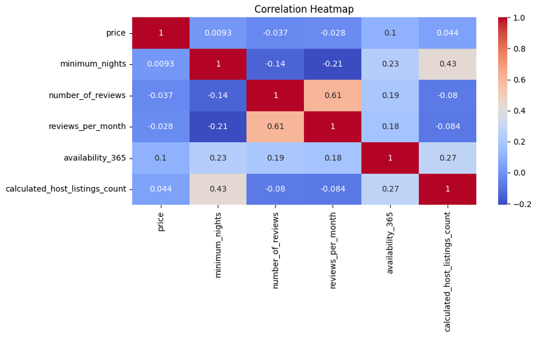
Price distribution graph
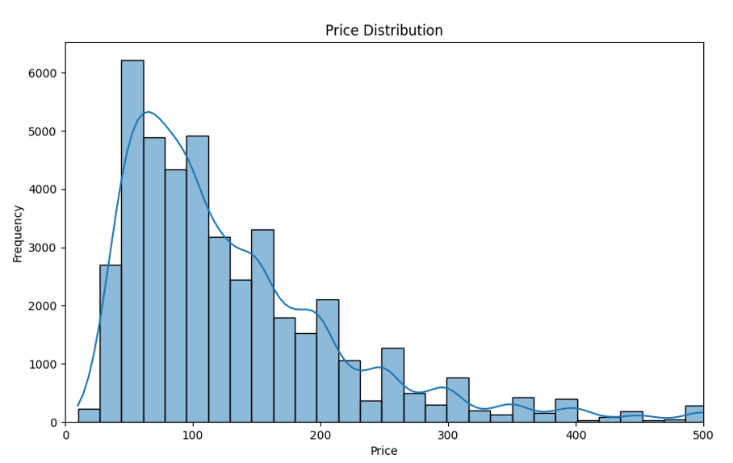
Distribution of Room Types by Neighbourhood Group
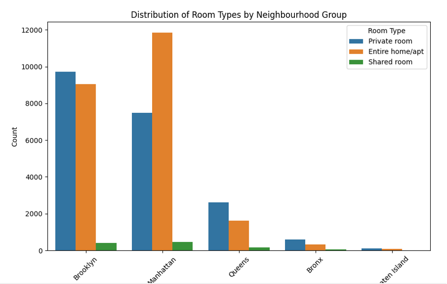
K-Means Clustering Results for Price and Reviews per month
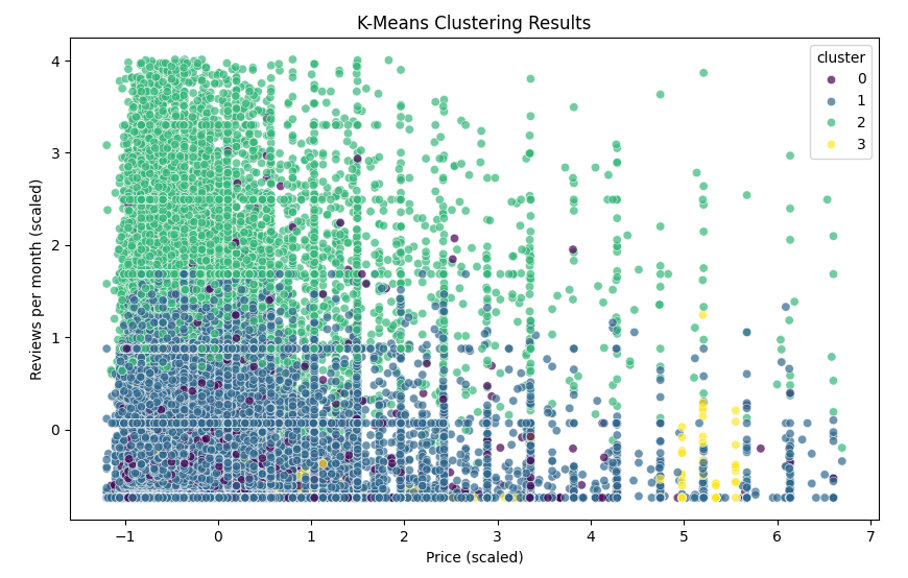
K-Means Clustering Results for Price and Reviews per month (alternate scale)
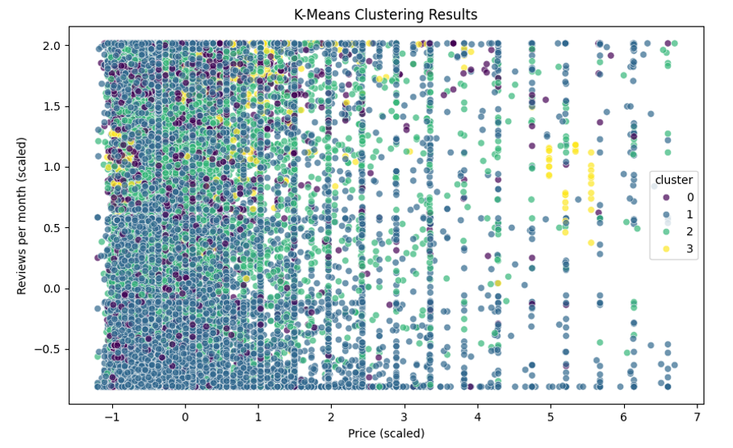
Box plot of Price By Neighbourhood Group
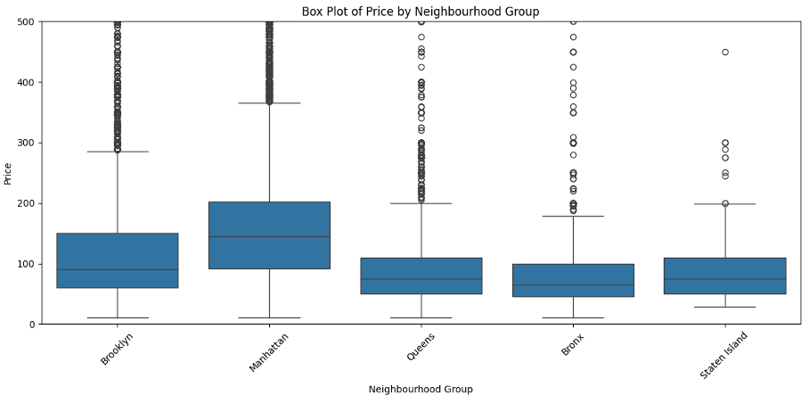
Cluster Characteristics Visualization
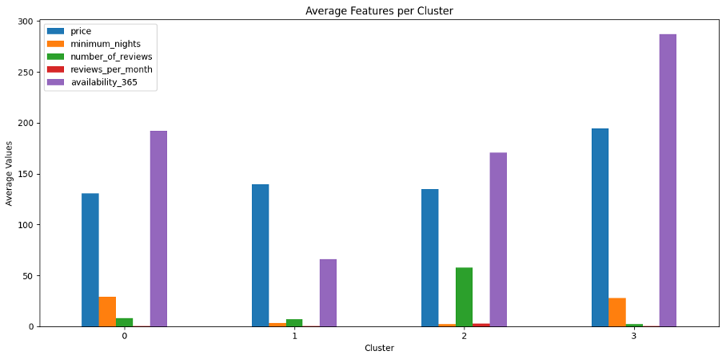
Price vs. Number of Reviews Clusters
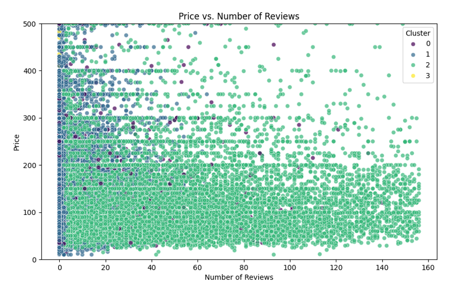
Pair Plot (relationships between multiple features)
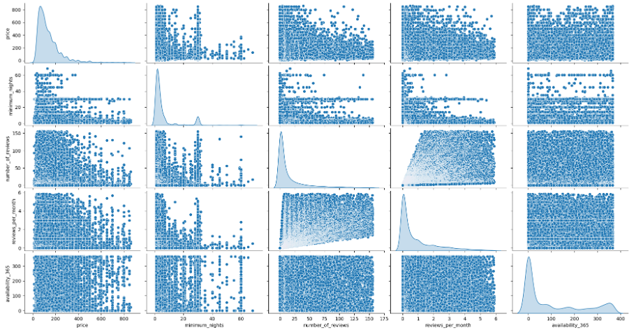
Bar Graph for the Average characteristics of each customer segment
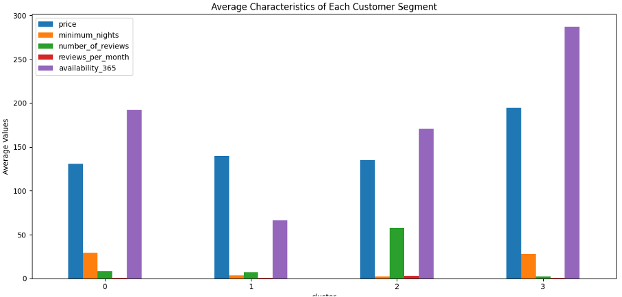
Heatmap of Clusters by Room Type and Neighbourhood
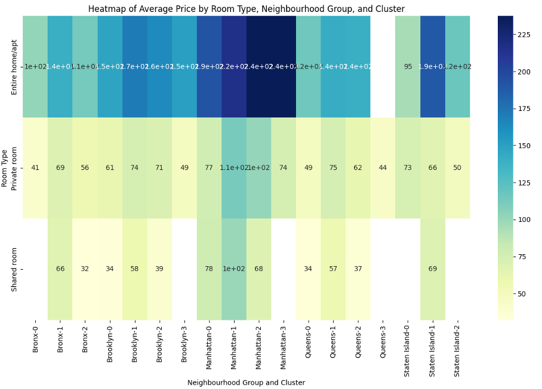